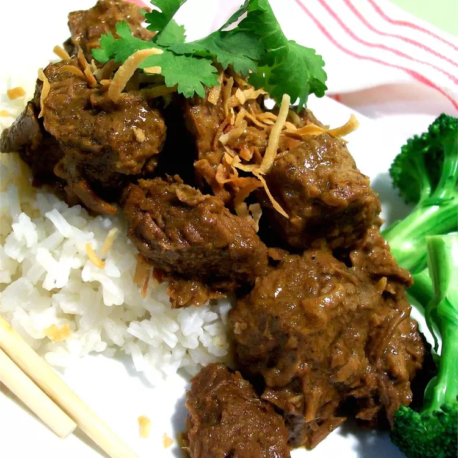

Malaysian Beef Rendang

Description
The dish has a unique flavor, and by varying the amounts of sugar and chillies a whole range of effects can be
produced. Serve with rice.
Ingredients
- 3/8 pound shallots
- 3 cloves garlic
- 15 dried red chilli peppers
- 5 slices fresh ginger root
- 5 lemon grass, chopped
- 2 teaspoons coriander seeds
- 2 teaspoons fennel seeds
- 2 teaspoons cumin seeds
- 1 pinch grated nutmeg
- 1 tablespoon vegetable oil
- 1 1/4 pounds beef stew meat, cut into 1 inch cubes
- 1 1/2 tablespoons white sugar
- 2 cups shredded coconut
- 5 whole cloves
- 1 cinnamon stick
- 1 2/3 cups coconut milk
- 7/8 cup water
- salt to taste
Steps
-
Heat the coconut in a dry wok, stirring continuously until golden brown. Set aside to cool.
-
Using a blender or a food processor, blend the shallots, garlics, chillies, ginger, and lemon grass to a thick paste.
-
Grind the corriander, fennel, cumin and nutmeg.
-
Using the wok, fry the shallot paste in a little oil for a few minutes. Add the ground corriander, fennel, cumin and
nutmeg; cook for 3 to 4 minutes, stirring continuously. Add beef; cook over a medium heat for a further 3 to 4 minutes,
or until meat is browned.
-
Stir in sugar, coconut, cloves, cinnamon stick, coconut milk, and water. Bring to a boil, lower heat, and simmer until
most of the liquid has gone and the meat is tender (about an hour). Season with salt to taste.
Back to main page